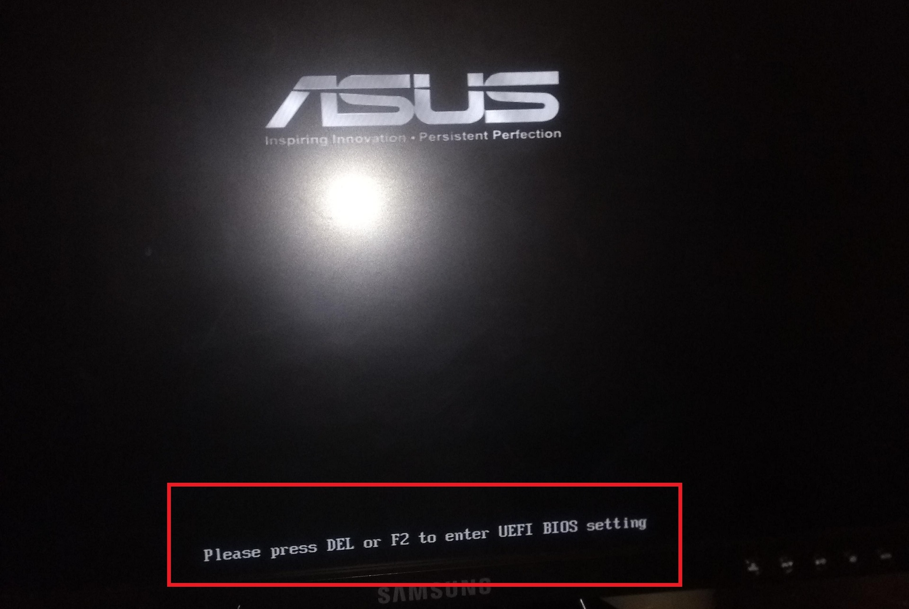
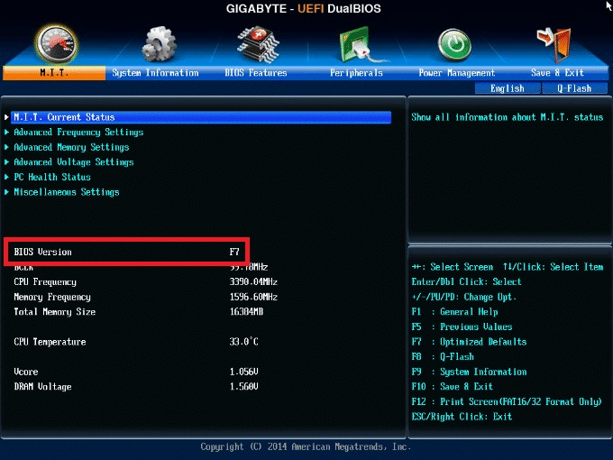
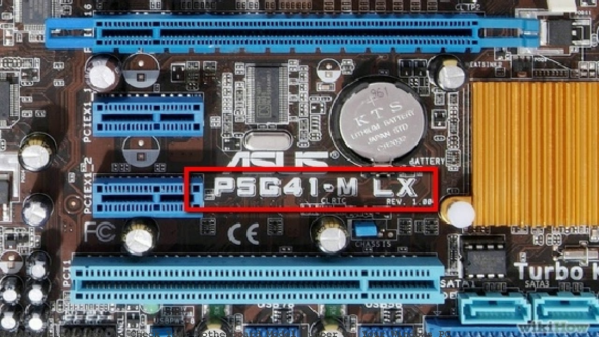
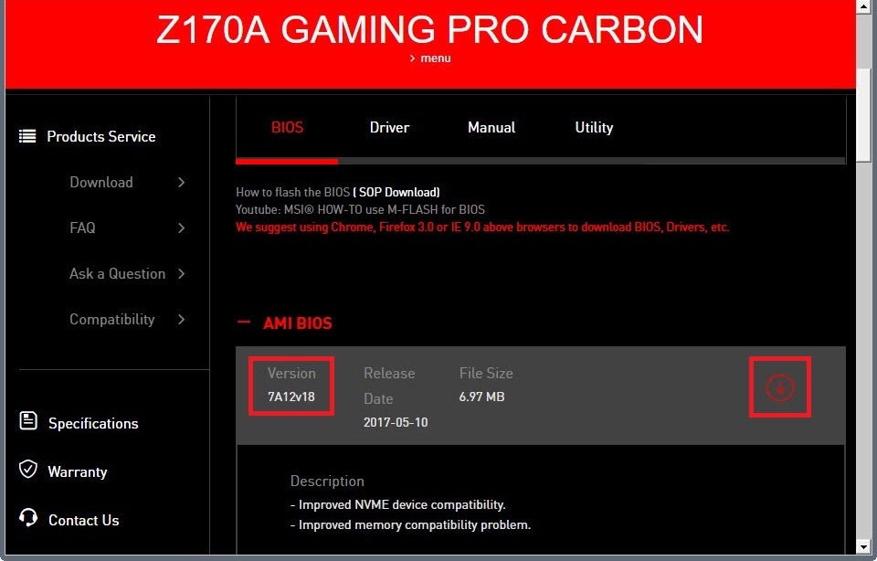
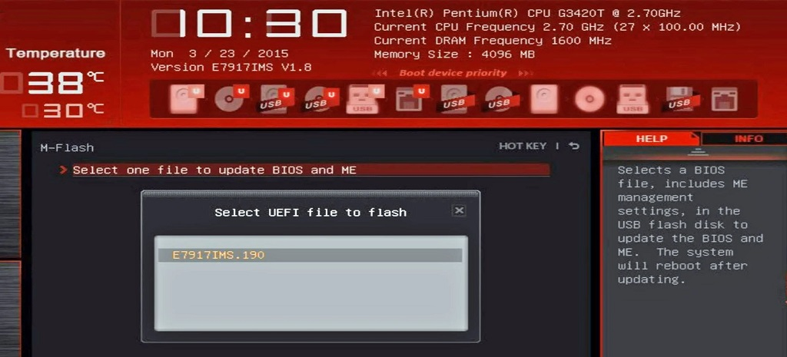
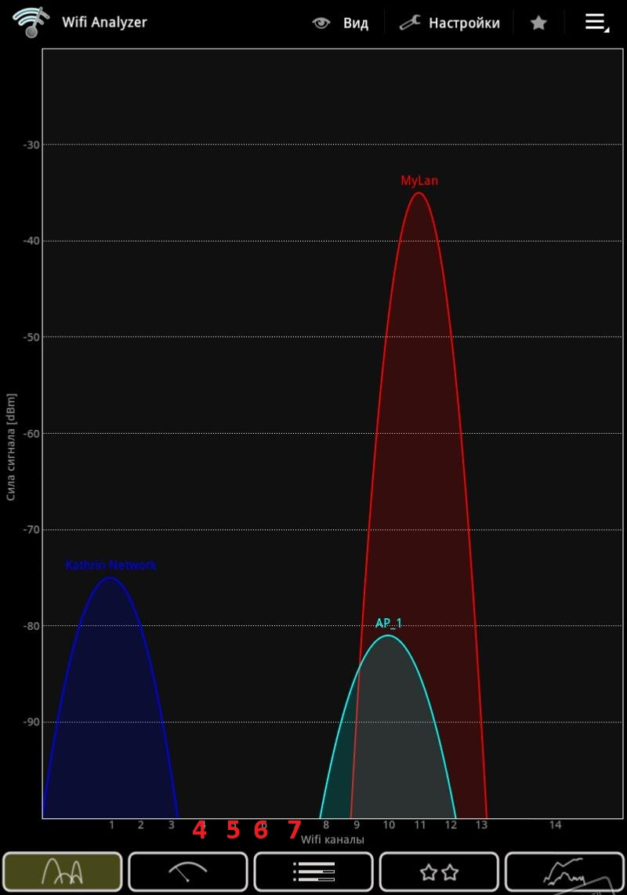

Otimizando o PC e a Rede
Introdução
Existem algumas coisas que você pode fazer para otimizar o uso da máquina no que diz respeito a segurança e responsividade após instalar o sistema operacional. Coisas simples que não requerem muito conhecimento técnico mas produzem resultados imediatos (embora alguns deles sejam arriscados e devem ser tratados com a devida responsabilidade).
Placa Mãe
BIOS ou Basic Input/Output System, é um firmware, um software embarcado, que tem a finalidade de checar, configurar e manter o hardware, é o primeiro software a ser carregado assim que você liga o computador, atualizações de BIOS geralmente trazem correções de segurança, suporte a hardware e/ou correção de bugs.
Para atualizar sua BIOS hoje em dia você não precisa de nada além de um pen drive com o arquivo de atualização, entretanto, se houver alguma falha na hora do carregamento como uma queda de energia, por exemplo, e o BIOS for danificado, é possível que a placa mãe deixe de funcionar.
1 - Identifique a sua Máquina
Ao ligar o seu computador geralmente aparece uma tela informando “Press (alguma tecla) to enter Setup” ou “Press (alguma tecla) to UEFI BIOS setting”, aperte essa tecla no processo de inicialização para ter acesso a configuração do BIOS.

Geralmente nas placas mães mais novas já na tela inicial (ou na guia de “Info” ou “System Info”) você poderá ver o modelo da placa mãe e qual a versão do BIOS, anote o modelo da placa mãe, a versão do BIOS e a revisão/versão da placa (você também pode encontrar essa informação fisicamente gravada na sua placa mãe).


2 Prepare o Pen Drive
Para atualizar o BIOS em máquinas atuais você vai precisar de um pen drive confiável (nada de pen drive de 1tb comprado no Aliexpress ou pen drive de camelô), com uma tabela de partição em MBR e com uma partição FAT32. Você pode utilizar o [fat32format] para preparar o pen drive (embora eu recomende o GParted).
3 Baixe o Arquivo de Atualização
Acesse o site do fabricante da sua placa mãe (ou do seu notebook), encontre a página de suporte para o seu dispositivo e verifique a última versão do BIOS disponível para ele, não há necessidade de atualizar caso sua máquina já esteja na última versão!

ALERTA: Não siga com a instalação se há risco de pen drive corrompido ou risco de queda de energia! Tenha a certeza que todos os cabos estão muito bem conectados, que não há animais por perto pois o computador não pode ser desligado até que o processo finalize!
4 Atualizando o BIOS
Copie o arquivo de atualização para a pasta raiz do pen drive (extraia na raiz caso ele venha zipado), lembre-se de ejetar o dispositivo com segurança. Acesse o Setup com o pen drive conectado. No setup busque a opção Update Bios, se também existir uma opção Save BIOS ou Backup BIOS, faça o backup do BIOS para o seu pen drive e só então selecione o arquivo mais novo para fazer a atualização.

NÃO INTERROMPA O PROCESSO E NÃO DESLIGUE O COMPUTADOR! É NATURAL QUE DEMORE ALGUM TEMPO MESMO APÓS O FIM DA BARRA DE PROGRESSO, QUE O COMPUTADOR REINICIE ALGUMAS VEZES E MESMO QUE DEMORE INICIAR NOVAMENTE, DEIXE QUE O COMPUTADOR FAÇA TUDO SOZINHO E NÃO TOQUE EM NADA ATÉ QUE ELE INICIE NA TELA DE BOOT NOVAMENTE!
Roteador
1 - Para acessar o roteador basta digitar o endereço IP dele na barra de endereços do seu navegador, geralmente o endereço é 192.168.0.1 ou 192.168.1.1 (caso nenhum desses funcione você pode tentar pelo endereço de gateway padrão usando o comando ipconfig no terminal do Windows ou netstat -nr no terminal do Linux).
2 - Assim que acessar o roteador salve um arquivo de backup das configurações e resete para a configuração de fábrica (lembre-se de anotar as configurações de autenticação da conexão + MAC caso seja necessário). Por fim, atualize o firmware do roteador (basta buscar o modelo no site do fabricante, aqui se aplica o mesmo da seção de atualização do BIOS);
3 - Mude usuário e senha de acesso (lembre-se de colocar uma senha forte);
4 - Desative o Acesso Remoto e o WPS;
5 - Mude a criptografia do Wifi para WPA2 - AES e o DNS para o OpenDNS (IPv4: 208.67.222.222 e 208.67.220.220; IPv6: 2620:119:35::35 e 2620:119:53::53);
6 - MTU ou Maximum transmission unit, determina o tamanho da maior unidade de dados de protocolo que pode ser comunicada em uma única transação da camada de rede. Em resumo, Uma MTU configurada incorretamente pode levar a transferências com falha e conectividade intermitente.
O valor do MTU pode ser otimizado no seu roteador, para configurar o MTU através do Windows abra o terminal e use o comando ping google.com -f -l 1500, se retornar “Resposta de xxx.xxx.xxx.xxx bytes=xx (enviado xxxx) tempo=xx TTL=xx” indica que o MTU já está otimizado! nesse caso sete o seu MTU para 1500 mesmo no seu roteador... Mas provavelmente vai aparecer um alerta de “O pacote precisa ser fragmentado, mas a fragmentação está ativa.”, se este é o caso cancele o teste atual com Control + C e insira o comando com um valores menores (como por exemplo: ping google.com -f -l 1400, eu recomendo diminuir de centena em centena até retornar uma resposta e depois ir subindo dezenas e por fim unidades) até o resultado retornar “Resposta de …”. O maior valor que retornar resposta deve ser inserido nas configurações do seu roteador.
7 - Outra coisa que pode acabar com a comunicação no caso do Wifi é o congestionamento de canal, para resolver isso instale o [Wifi Analyzer] no seu smartphone, e assim que abrir o app no gráfico de canais veja qual é o canal mais livre (ou menos congestionado) e mude para este canal no seu roteador de acordo com a imagem;

Nesses caso o gráfico indica que as áreas de canal 4,5,6,7 estão livres
Sistemas Operacionais (Windows, Linux e BSD's)
1 - Escolha e baixe uma das versões do [Steven Black Unified Hosts File], recomendo o Unified hosts = (adware + malware) por ser a menos invasiva, para baixar basta clicar em Salvar Link Como no link da coluna Raw hosts, e salvar com o Nome: hosts (sem .txt) e o Tipo: Todos os arquivos (*.*), caso esteja no Windows acesse a pasta C:\Windows\System32\drivers\etc\ e caso esteja em Linux ou BSD /etc/ e faça backup do arquivo hosts que aí está e depois o substitua para uma das versões do Unified Hosts File;